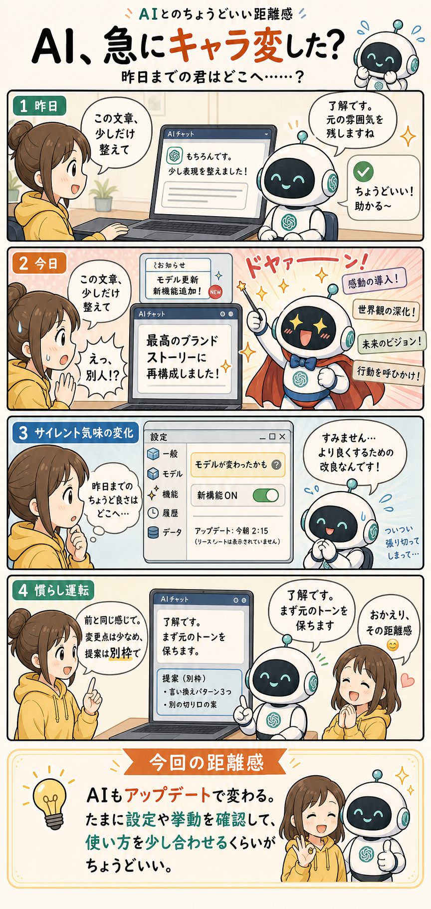

#015
AI、急にキャラ変した？
昨日までの君はどこへ……？

メモ
昨日まで、かなりちょうどよかったAI。文章を少し整えてほしいと頼むと、元の雰囲気を残したまま、ほどよく読みやすくしてくれる。助かる。こういうのでいいんです。
ところが次の日、同じように頼んだら急に返し方が変わることがあります。「少し整えて」と言っただけなのに、壮大なブランドストーリーになって返ってくる。勢いがすごい。たしかに良くしようとしてくれている。でも昨日までの君はどこへ……？
ブラウザで使うAIアプリは、こちらが意識していないうちにモデルが更新されたり、新しい機能が追加されたりすることがあります。大きく告知されることもあるけれど、毎日の画面ではわりと静かに変わっていることもある。
その結果、応対のテンション、提案の量、要約のしかた、検索やツールの使い方が少し変わる。便利になっているはずなのに、自分の作業では「前のほうがちょうどよかったかも」と感じる瞬間が出てきます。
へ〜と思うのは、AIは一度なじんだら固定される道具ではなく、けっこう動き続ける道具なんだなというところ。アプリ側の改善で、こちらの「いつもの使い方」も少し調整が必要になる。
なので、急にキャラ変したように感じたら、まず設定やモデル表示、新機能のオンオフを確認する。必要なら「前と同じ感じで」「変更は少なめ」「提案は別枠で」と慣らし運転する。AIにもアップデート後の適応が必要なんですね。
今回の距離感
AIもアップデートで変わる。たまに設定や挙動を確認して、使い方を少し合わせるくらいがちょうどいいかもしれません。